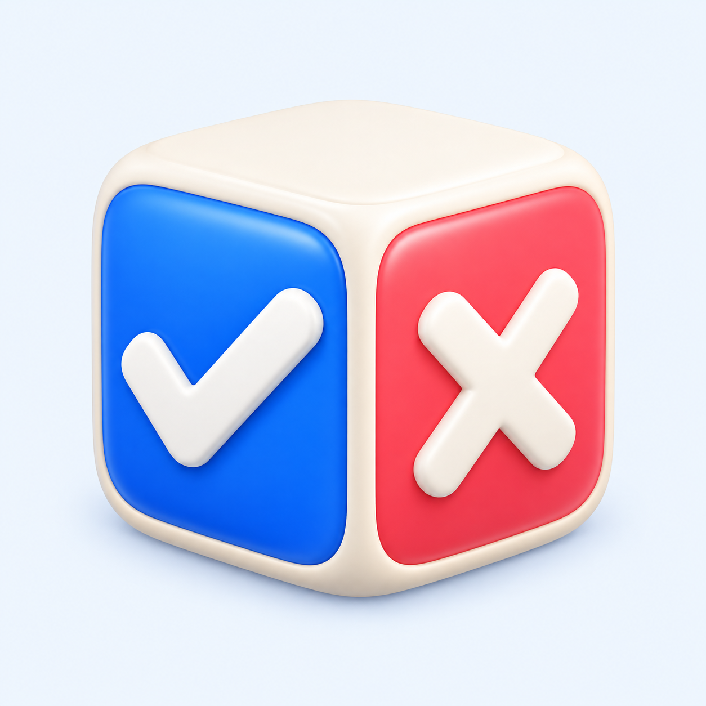
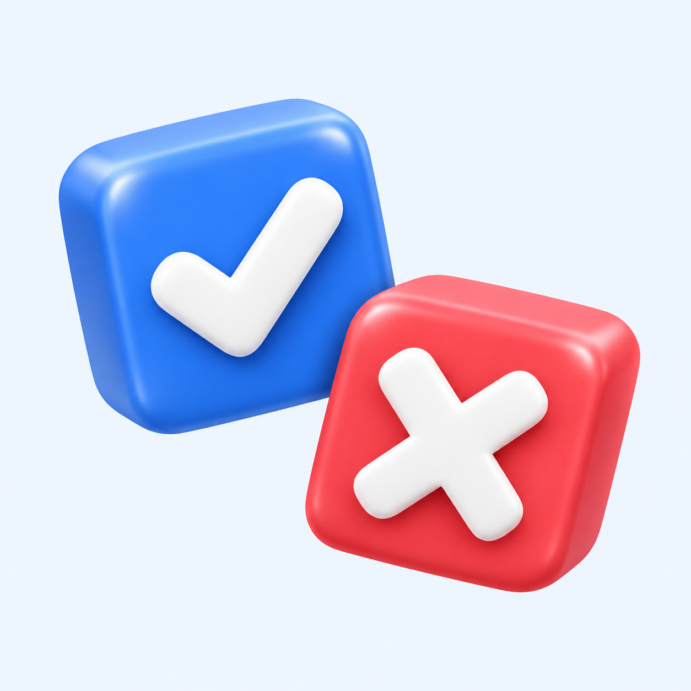
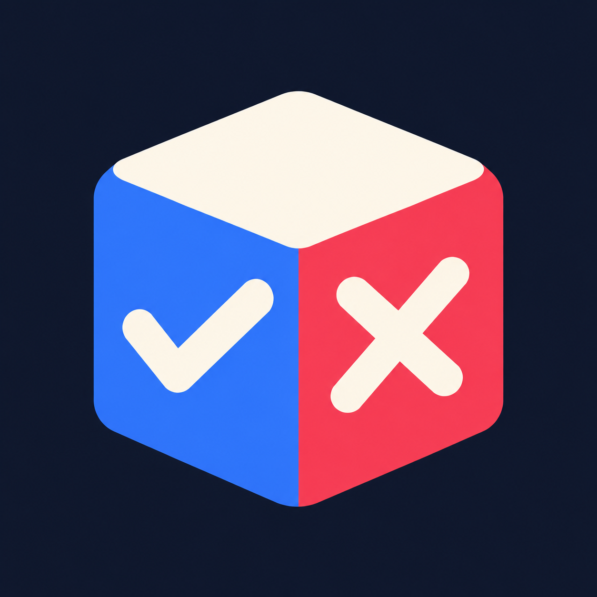
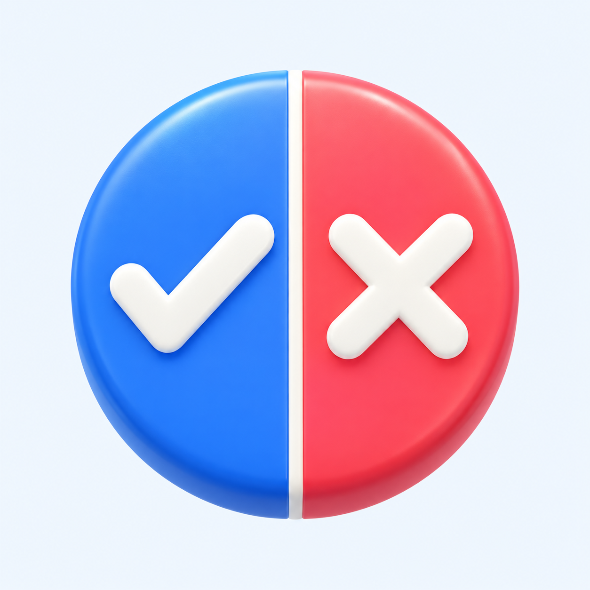

1. Decision die

48px circle48px rounded32px square
Recommended: closest to the app's die.
Download original PNGFour original options built around the app's blue/coral colors, playful rounded forms, and random yes/no purpose. Checkmarks and rejection crosses replace alphabetic branding.

Recommended: closest to the app's die.
Download original PNG
Closest to the featured artwork.
Download original PNG
A simpler silhouette on navy.
Download original PNG
A balanced abstract alternative.
Download original PNGLarge previews use a rounded-square mask. Small previews show how the same original artwork reads under different shapes. These are concept masters, with Android launcher layers and the final 512px Play export to follow after a design is chosen.